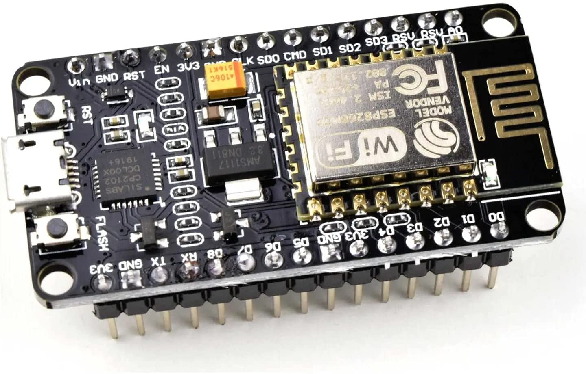

<div
  class="relative flex flex-col min-w-0 break-words bg-white w-full mb-6 shadow-xl rounded-lg mt-16"
>
  <div class="px-6">
    <div class="flex flex-wrap justify-center">
      <div class="w-full px-4 flex justify-center">
        <div class="relative">
          
        </div>
      </div>
    </div>
    <div class="text-center mt-12">
      <h3
        class="text-xl font-semibold leading-normal mb-2 text-blueGray-700 mb-2"
      >
        ZF Sachs Painting Room
      </h3>
      <div
        class="text-sm leading-normal mt-0 mb-2 text-blueGray-400 font-bold uppercase"
      >
        <i class="fas fa-map-marker-alt mr-2 text-lg text-blueGray-400"></i>
        ZF Sachs México
      </div>
      <div class="mb-2 text-blueGray-600 mt-10">
        <i class="fas fa-briefcase mr-2 text-lg text-blueGray-400"></i>
        Departamento de calidad y procesos
      </div>
    </div>
    <div class="mt-10 py-10 border-t border-blueGray-200 text-center">
      <div class="flex flex-wrap justify-center">
        <div class="w-full lg:w-9/12 px-4">
          <p class="mb-4 text-lg leading-relaxed text-blueGray-700">
            Para consultar las especificaciones completas del sistema, revisa la tabla informativa de la izquierda e identifica tu dispositivo.
          </p>
          <a href="https://www.make-it.ca/nodemcu-details-specifications/" class="font-normal text-red-600">
            Ver especificaciones completas
          </a>
        </div>
      </div>
    </div>
  </div>
</div>
